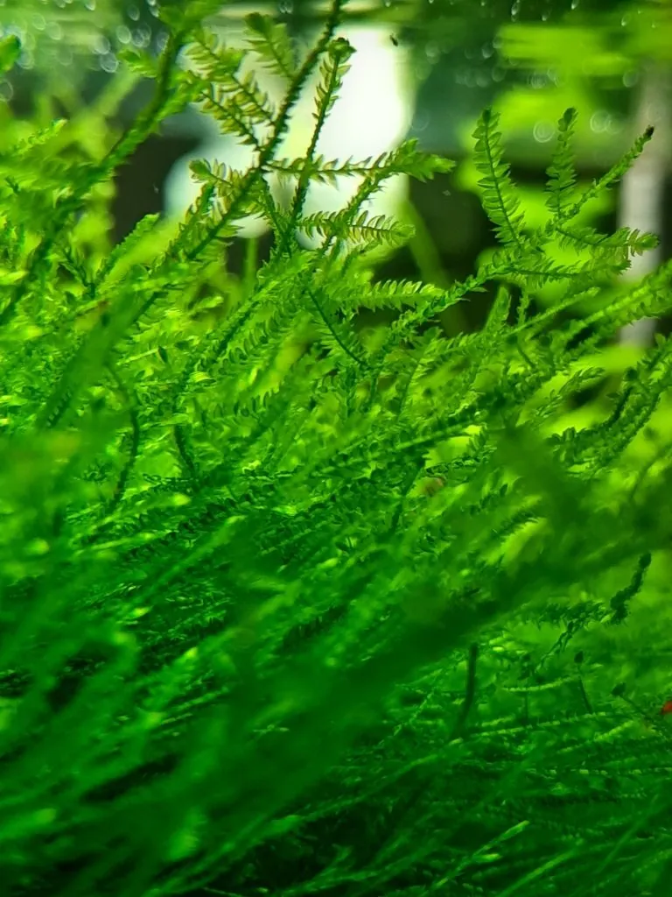

水生植物 · 植物界
爪哇莫斯 Taxiphyllum barbieri

灰藓科水生藓类，茎叶羽状分枝、深绿柔软，可绑于沉木岩石上生长，是最普及、最耐养的水族箱莫斯。
- 分类
- 门藓类植物门纲藓纲目灰藓目科灰藓科属长灰藓属
- 栖息环境
- 热带雨林溪流中的湿石、倒木与瀑布溅水区，喜阴湿
- 地理分布
- 原产东南亚爪哇、苏门答腊等地，现世界各地水族箱广泛栽培
- 保护级别
- 暂无评估；栽培种群庞大
物种志
爪哇莫斯为灰藓科长灰藓属水生藓类，植物体呈不规则羽状分枝，茎匍匐或下垂，长可达 15 厘米，叶片卵状披针形，深绿色，柔软而密集，全株无真正的根，靠假根附着。它不形成真正的花与种子，以孢子体和营养枝繁殖，水下几乎只靠分枝扩展。
爪哇莫斯原产东南亚爪哇、苏门答腊等地的溪流与雨林湿石上，是水族箱中最普及的莫斯之一。它耐阴、耐低光，适宜水温 20–28 ℃、软水至中性水，可绑缚在沉木、岩石或网片上，长成绿色“树冠”与“草坪”。因生长较慢、形态自然，被广泛用于造景中的树木、石壁与虾缸隐蔽物。它对水质波动耐受性好，但怕高温与藻类覆盖，强光下需配合二氧化碳以免滋生丝藻。
形态与习性
- 株高分枝长可达 15 厘米，可垂挂生长
- 水深完全沉水生长，也可在水上湿石上存活
- 水质喜软水至中性水，pH 6.0–7.5，水温 20–28 ℃
- 光照耐低光，中弱光即可，强光易生藻
- 附着用棉线或胶绑于沉木、岩石上
- 繁殖分枝扦插，剪下小枝重新绑缚
趣味知识
- 爪哇莫斯没有真正的根，靠假根附着在沉木和石头上，因此不能埋进底砂。
- 它是最早进入水族市场的莫斯之一，因耐养、形态自然被称为“水草胶水都省了”的植物。
- 在虾缸中，它是稚虾最重要的隐蔽与觅食场所。
- 水温超过 30 ℃ 时它会发黄枯萎，夏季需注意降温。